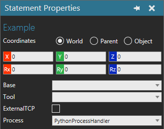
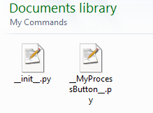

vcPythonProcessHandler is a behavior that allows you to define a custom robot statement written in Python. You can also use this behavior as a handler for overriding the default execution of statements in a robot program.
Inherits: vcBehaviour
The script of a process handler defines its logic. In most cases, the event OnStatementExecute is used to get a handle for the executor of a robot program and the vcPositionStatement calling the process. A vcPositionStatement must be implemented as a process statement in order to call a process by referencing its handler.
Example. Adding a process statement
| from vcScript import * comp = getComponent() for b in comp.Behaviours: if b.Type == VC_ROBOTEXECUTOR: rx = b break rp = rx.Program main = rp.MainRoutine ps = main.addStatement(VC_STATEMENT_PROCESS) for b in comp.Behaviours: if b.Type == VC_PYTHONPROCESSHANDLER: ph = b break ps.Process = ph ps.Name = "Example" |
After a process statement has been to added to a routine, you can use the GUI to select the process statement and edit its properties. For example, you can change what process is called by the statement.

In most cases, you would use the event OnStatementAdd to initialize a statement calling the process and to add any positions or nested statements. By default, the positions of a process statement are not executed and need to be manually called when the statement is executed in its routine. When a new position is created, its position matrix is defined in World coordinates as well as the Parent coordinate system of the position. The position itself is a vcPositionFrame object, so you can use the PositionInWorld and PositionInReference properties to access different versions of the position matrix.
Example. Adding positions to a statement
| from vcPythonProcessHandler import * def OnStatementAdd(statement): for i in range(5): pos = statement.createPosition("PP") mtx = pos.PositionInWorld mtx.translateAbs(1400,0,1000) mtx.rotateAbsZ(i*90) pos.PositionInWorld = mtx def OnStatementExecute(executor, statement): for pos in statement.Positions: executor.Controller.moveTo(pos.PositionInWorld) |
You can develop a Python command that adds a new process statement to the program of a selected robot. Generally, the command is executed by a button that you add to the Program Editor panel, Statements toolbar. The command itself would need to be registered by storing its configuration and command files in the My Commands folder of your R-Pro documents.

Source files of example process statement
| Name | Type | Access | Description |
| Icon | vcBitMap | RW | Defines an icon for the process when referenced by a process statement in the GUI. |
| Process | String | RW | Defines the name and id of process. |
| Script | String | RW | Defines the executable Python code of process. |
| Name | Return Type | Parameters | Description |
| condition | None | Function condition [Real timeout] | Runs a conditional test that stops process execution until a given
function returns a True value.
The given function can either be a lambda function or one defined in Script. Evaluation of condition is done continuously. |
| delay | None | Real time | Executes timed delay during process execution. |
| evaluateCondition | None | None | Triggers the evaluation of an active condition() or triggerCondition() function in the script. |
| getApplication | vcApplication | None | Returns the application object. |
| getComponent | vcComponent | None | Returns the component containing the process handler. |
| getSimulation | vcSimulation | None | Returns the simulation object. |
| getTrigger | vcBehaviour | None | Returns the object triggering an event in Script; otherwise returns
None.
This method is only useful in a condition function passed to condition() and triggerCondition() methods. Note: A trigger, for example, is a signal or action connected to process handler. |
| resumeRun | None | None | Resumes the execution of a suspended OnRun() function. |
| suspendRun | None | None | Stops the execution of an OnRun() function. |
| triggerCondition | None | Function condition, [Real timeout] | Runs a conditional test, triggered during a simulation, that stops
process execution until a given function returns a True value.
The given function can either be a lambda function or one defined in Script. Evaluation of condition is done each time a trigger of process handler occurs during a simulation. |
| Name | Parameters | Description |
| OnContinue | None | Triggered when a simulation resumes running after being stopped. |
| OnDestroy | None | Triggered when an object is destroyed in 3D world. |
| OnEvaluate | None | Triggered when component feature tree of process handler is rebuilt. |
| OnFinalize | None | Triggered when layout or component is being loaded in 3D world.
The event occurs, for example, when copying a component, or loading a layout of components. The event is triggered before the needed components are attached to the 3D world. |
| OnReset | None | Triggered when simulation is reset. |
| OnSignal | vcSignal signal | Triggered when the value of a signal connected to process handler is changing. |
| OnStart | None | Triggered at the start of a running simulation. |
| OnStatementAdd |
vcPositionStatement statement |
Triggered when a process statement referring to this process handler
is created in robot program.
Generally, this is used to initialize a vcPositionStatement object referring to this process handler with new properties and initial values. |
| OnStatementDialog | vcPositionStatement statement | Triggered when there is an attempt to access properties dialog of
process statement referring to this process handler.
In this case, you need to return True to use standard properties dialog; otherwise return False. |
| OnStatementExecute | vcExecutor executor, vcPositionStatement process_statement | Triggered when process statement referring to this process handler is
executed during a simulation.
Time consuming methods, for example delay() and condition(), may only be executed in this event handler or in functions called from this event handler. Note: A process handler can only be executed at one given time, so multiple calls to the same process will return immediately. |
| OnStatementModified | vcPositionStatement statement | Triggered after properties dialog of process statement referring to this process handler is closed. |
| OnStatementRemove | vcPositionStatement statement | Triggered when reference to process handler in a process statement is removed. |
| OnStop | None | Triggered when simulation is stopped. |
Notes:
Example. Modify the execution of point-to-point motion statements
| from vcRslProcessHandler import * from vcBehaviour import * import vcMatrix, vcVector, math app = getApplication() comp = getComponent() RAD_TO_DEG = math.pi/180.0 # Modifies the execution of PTP motions # Uses default execution for other statements def OnStatementExecute(executor, stat): if stat.Type == VC_STATEMENT_PTPMOTION: controller = executor.Controller controller.clearTargets() target = controller.createTarget() target.JointTurnMode = VC_MOTIONTARGET_TURN_NEAREST target.TargetMode = VC_MOTIONTARGET_TM_NORMAL target.MotionType = VC_MOTIONTARGET_MT_JOINT if stat.Base == None: target.BaseName = "" else: target.BaseName = stat.Base.Name if stat.Tool == None: target.ToolName = "" else: target.ToolName = stat.Tool.Name start_pos = vcMatrix.new(target.Target) positions = stat.Positions controller.addTarget(target) M = positions[0].PositionInReference op = M.P p = vcVector.new(op.X - 50, op.Y, op.Z) M.P = p target.Target = M controller.addTarget(target) controller.move() executor.callStatement(stat) else: executor.callStatement(stat) |